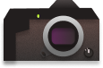
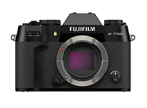
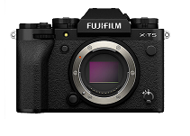
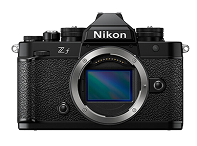
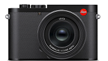
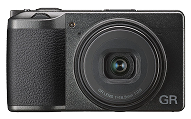
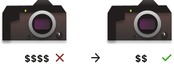
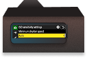

Getting
Started
It is important to have the right tools and practices when capturing your shots. This page will guide you on the best cameras, apps and tips to succeed in photography.
What Camera Should I Use?
The most essential part of photography is the camera. While using your phone is a good option when starting out, you should branch out to more niche devices that will truly put you into the photographer life.

Fujifilm X-T50
More classic and affordable than the Fujifilm X-T5, with a 40.2MP X-Trans CMOS 5 sensor.

Fujifilm X-T5
High-end APS-C multimedia mirrorless camera, with the highly sought feature of a 40MP APS-C X-Trans 5 BSI sensor.

Nikon ZF
Old-school ergonomic FX-format camera with improved auto-focus tracking.

Leica Q3
If you are looking to splurge, this luxury camera sits with a 60MP full-frame sensor with MAESTRO IV image processing.

Ricoh GR III
Pocket sized camera with a fixed lens, SLR-quality images and an updated 24.2 MP CMOS sensor.
What Photo Editing App Should I Use?
Photo editing apps are a great software a photographer can use to set the mood and concept they want to convey towards their audience and themselves. It is important to utilize such apps to push your photography to the next level.
Lightroom
Lightweight app, equipped with a myriad of tools such as filters, masking, selection and AI healing tools.
polarr
Desktop quality tools that have the popular features of AI filters and editing.
Photoshop
While this app is more expensive than its competition, it is the industry standard, equipped with a lot more options than your typical photo editing app and higher res photos.
Important Practices and Tips
Having the best camera and photo editing app in the world might help tremendously, but it won’t magically grant you those cherished pictures you seek. It is important to be knowledgeable about tips from experienced photographers and stick with best practices to capture those coveted photos.
Know Your Camera
Before jumping into taking photos, it is important to know the camera you are working with. Read the manual, analyze the features and get comfortable with the device. A tip from a national geographic photographer is to put the camera in “program” mode.

Rent First, You can Buy Later
Cameras are notoriously expensive and that creates a barrier for those starting in photography to develop their passion. Both online and brick and mortars offer stunning cameras for rent at a fraction of the original cost! A well known site to offer such services is lensrentals.

Use auto ISO
Most modern cameras have the ISO feature. This feature helps with exposure and it is essential when taking photos. For the best quality, put your camera in automatic-mode which is the “native ISO”.
Have Fun!
While photography is highly regarded as a professional hobby, it doesn't mean you can't have fun in the process. So many undiscovered photos are yet to be taken through playing around with your subject. Take shots from angles you wouldn’t usually consider, fill in spaces you ought to leave empty and try to get a reaction out of yourself when you take these photos.
References
Where you can find for more information: